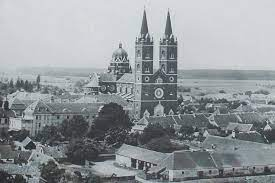

 Nadbiskupijski arhiv u Đakovu je privatni, crkveni arhiv koji je u vlasništvu Đakovačko-osječke nadbiskupije i đakovačko-osječkog nadbiskupa. Čuva arhivske fondove i zbirke raznih (nad)biskupijskih ustanova, pojedinih biskupa, svećenika ali i ponekog redovnika, redovnice i vjernika-laika.
Prvi spomen Arhiva u Đakovu i arhivskoga gradiva nazali se u knjizi autora Pavića i Cepelića Josip Juraj Strossmayer biskup bosansko-djakovački i sriemski god. 1850.-1900. (str. 17), gdje kaže da je biskup Emerik Mirko Raffay 1821. i 1822. godine sagradio južno krilo biskupskog dvora u Đakovu u kojem smjesti dijec. Arhiv i pisarne (1821-1822.).
Iako je Arhiv kroz povijest imao nekoliko arhivara (Adam Filipović Hendentalski, Ivan Crnić, Marinko Lacković…), prvi arhivar koji je ostavio određene zapise o radu u Arhivu je bio kasniji biskup, Stjepan Bäuerlein, koji je izradio i statut Dijecezanskog arhiva 1950. godine, a koji je odobrio ondašnji biskup Antun Akšamović 25. listopada.
Arhivsko je gradivo Dijecezanskog (Biskupijskog) arhiva u Đakovu bilo do 2006. godine smješteno u prostorima Biskupskog dvora, gdje nisu bili idealni uvjeti niti za arhivsko gradivo, a nije postojala niti čitaonica u kojoj bi se arhivsko gradivo moglo istraživati. Te 2006. godine, u razdoblju od sredine svibnja do sredine srpnja, sve je arhivsko gradivo preseljeno u novu zgradu Središnje biskupijske i fakultetske knjižnice i Biskupijskog arhiva na adresu P. Preradovića 17, u sklopu kampusa ondašnje Teologije u Đakovu, današnjeg KBF u Đakovu. Nadbiskupijski arhiv u Đakovu dakle dijeli prostore (zgradu) s današnjom Središnjom nadbiskupijskom i fakultetskom knjižnicom u Đakovu. Za prostore Arhiva izdvojeno je spremište od oko 100 m2, još jedno manje spremište, prostorija za prijem i obradu arhivskoga gradiva, jedan protupožarni ormar u trezoru, dok čitaonicu na prvom katu zgrade dijeli sa Središnjom nadbiskupijskom i fakultetskom knjižnicom u Đakovu, a u čitaonici se nalazi i ured arhivara. Arhivsko gradivo se čuva na arhivskim policama, u arhivskim kutijama od nekiselog papira, u povoljnim mikroklimatskim uvjetima, ima protuprovalnu zaštitu, kao i vatrodojavu.
Uzdignućem nekadašnje Đakovačke ili Bosanske i Srijemske biskupije na čast nadbiskupije, i Arhiv dobiva novo ime: Nadbiskupijski arhiv u Đakovu.
Arhivsko gradivo se od preseljenja u nove prostore slaže, čisti, obrađujem popisuje, te izdaje na korištenje istraživačima u prostorima čitaonice. Količina arhivskoga gradiva se procjenjuje na oko 400 m/d i postupno se povećava primitkom novih, uglavnom osobnih fondova preminulih svećenika.
Godine 2015. je za potrebe Arhiva nabavljen skener koji nije bio u uporabi do 2023. godine (za arhivsko gradivo).
Tijekom 2021. godine izrađen je i od nadbiskupa Đure Hranića potpisan (23. studenoga 2021. godine). Pravilnik o radu Nadbiskupijskog arhiva i korištenju arhivskoga gradiva Đakovačko-osječke nadbiskupije.
U Arhivu radi jedan arhivar (zaposlen od 2001. godine, od 2003. godine na puno radno vrijeme) koji je 2015. godine stekao gradus doktora informacijskih i komunikacijskih znanosti, smjera arhivistika i više suradnika koji su se s vremenom izmjenjivali.
Tijekom 2022. godine digitaliziran je dio arhivskoga gradiva, a od listopada 2023. godine počela je priprema parica za digitalizaciju (skeniranje).
Radno vrijeme Nadbiskupijskog arhiva u Đakovu sa strankama je od ponedjeljka do petka, od 8:00 do 14:30 sati. Dolazak je obvezan uz prethodnu najavu.